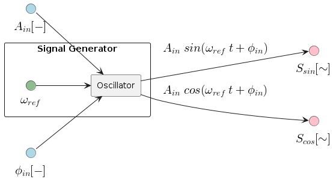
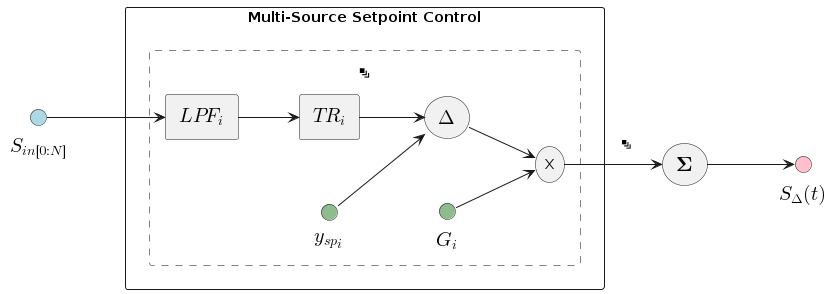

AFM / SPM Components
Table of Contents
1. Overarching Diagram

2. Components
2.1. Main Hardware
2.1.1. Cantilever Subsystem
2.1.1.1. Diagram

2.1.1.2. Parameters
| Grouping | Parameter | Description | Units |
|---|---|---|---|
| Cantilever | cantilever_invols |
Inverse Optical Lever Sensitivity | m/V |
cantilever_k |
Spring Constant | ||
cantilever_f0 |
Resonant Frequency | Hz | |
cantilever_q |
Q-Factor | ||
| Tip-Surface | tip_bias_voltage |
Tip-Surface Bias Voltage | V |
tip_bias_amp_gain |
Bias Amplifier Gain | V | |
tip_bias_amp_offset |
Bias Amplifier Offset | V |
2.1.2. Scanning Subsystem
2.1.2.1. Diagram

2.1.2.2. Parameters
| Grouping | Parameter | Description | Units |
|---|---|---|---|
| Piezo | piezo_sensitivity_{3d} |
Piezo Sensitivity | Ang/V |
piezo_amp_gain_{3d} |
Piezo Amplifier Gain | V/V | |
piezo_amp_offset_{3d} |
Piezo Amplifier Offset/Bias | V | |
| LVDT | lvdt_sensitivity_{3d} |
LVDT Sensitivity | V/Ang |
lvdt_offset_{3d} |
LVDT Offset/Bias | V | |
| Scan Params | scan_dim_{2d} |
Maximum Scan Dimensions | m |
scan_roi_dims_{2d} |
Current Scan Dimensions | m | |
scan_roi_pos_{2d} |
Current Scan Offset (x,y) | m | |
scan_origin_pos_{2d} |
Coordinate System Origin | m | |
scan_roi_angle |
ROI Angle (if applicable) | ° | |
scan_direction |
Scan Direction | N/A | |
scanning_speed |
Scanning Speed | m/s | |
moving_speed |
Moving Speed (not scanning) | m/s |
2.2. Dynamic Mode Components
2.2.1. Signal Generator
2.2.1.1. Diagram

2.2.1.2. Parameters
| Grouping | Parameter | Description | Units |
|---|---|---|---|
| Signal Generator | oscillator_f_ref |
Oscillator reference frequency | Hz |
2.2.2. Lock-In Amplifier
2.2.2.1. Diagram

2.2.2.2. Parameters
| Grouping | Parameter | Description | Units |
|---|---|---|---|
| Lock-In | lockin_averaging_period |
Averaging Period | cycles |
2.3. Feedback Subsystem
2.3.1. Multi-Source Setpoint Control
2.3.1.1. Diagram

2.3.1.2. Parameters
| Grouping | Parameter | Description | Units |
|---|---|---|---|
| Input | fb_input_{#}_units_to_v_factor |
Units-to-V conversion (Input represents x as DC V) | x/V |
fb_input_{#}_gain |
Gi: gain applied to signal i (before summing) | ||
fb_input_{#}_setpoint |
Reference Set-Point | V | |
| Low-Pass Filter | fb_input_{#}_low_pass_freq |
Cut-off Frequency | Hz |
fb_input_{#}_low_pass_adaptive_fmin |
Min. F0 (if adaptive) | Hz | |
fb_input_{#}_low_pass_adaptive_fmax |
Max. F0 (if adaptive) | Hz | |
fb_input_{#}_low_pass_adaptive_current |
Current Crossover (if adaptive) | A | |
| Transform | fb_input_{#}_transform_mode |
Mode: 0:Off, 1:On, 2:Log, 4:IIR, 8:FUZZY | n/a |
fb_input_{#}_transform_fuzzy_threshold |
Fuzzy-Mode Threshold Level (FUZZY Only) | V |
2.3.2. PID Controller
2.3.2.1. Diagram

2.3.2.2. Parameters
| Grouping | Parameter | Description | Units |
|---|---|---|---|
| PID | pid_gain_p |
Proportional Gain | V/V |
pid_gain_i |
Integral Gain | V/V | |
pid_gain_d |
Derivative Gain | V/V |
3. AFM / SPM Setups
3.1. Contact Modes

3.2. Dynamic Modes
3.2.1. AM-AFM - Amplitude Modulation

3.2.2. FM-AFM - Frequency Modulation
Notes:
- We require the PLL and z-height feedback because they function at different frequencies: PLL at ~100 kHz, z-height at ~1 kHz.
- So: the PLL maintains the signal on resonance much more quickly than the z-height maintains the resonant frequency constant.
4. Full Table of Parameters
| Subsystem | Grouping | Parameter | Description | Units |
|---|---|---|---|---|
| Cantilever | Cantilever | cantilever_invols |
Inverse Optical Lever Sensitivity | m/V |
cantilever_k |
Spring Constant | n/a | ||
cantilever_f0 |
Resonant Frequency | Hz | ||
cantilever_q |
Q-Factor | n/ | ||
| Tip-Surface | tip_bias_voltage |
Tip-Surface Bias Voltage | V | |
tip_bias_amp_gain |
Bias Amplifier Gain | V | ||
tip_bias_amp_offset |
Bias Amplifier Offset | V | ||
| Scanning | Piezo | piezo_sensitivity_{3d} |
Piezo Sensitivity | Ang/V |
piezo_amp_gain_{3d} |
Piezo Amplifier Gain | V/V | ||
piezo_amp_offset_{3d} |
Piezo Amplifier Offset/Bias | V | ||
| LVDT | lvdt_sensitivity_{3d} |
LVDT Sensitivity | V/Ang | |
lvdt_offset_{3d} |
LVDT Offset/Bias | V | ||
| Scan Params | scan_dim_{2d} |
Maximum Scan Dimensions | m | |
scan_roi_dims_{2d} |
Current Scan Dimensions | m | ||
scan_roi_pos_{2d} |
Current Scan Offset (x,y) | m | ||
scan_origin_pos_{2d} |
Coordinate System Origin | m | ||
scan_roi_angle |
ROI Angle (if applicable) | ° | ||
scan_direction |
Scan Direction | N/A | ||
scanning_speed |
Scanning Speed | m/s | ||
moving_speed |
Moving Speed (not scanning) | m/s | ||
| Main Feedback | Input | fb_input_{#}_units_to_v_factor |
Units-to-V conversion (Input represents x as DC V) | x/V |
fb_input_{#}_gain |
Gi: gain applied to signal i (before summing) | V/V | ||
fb_input_{#}_setpoint |
Reference Set-Point | V | ||
| Low-Pass Filter | fb_input_{#}_low_pass_freq |
Cut-off Frequency | Hz | |
fb_input_{#}_low_pass_adaptive_fmin |
Min. F0 (if adaptive) | Hz | ||
fb_input_{#}_low_pass_adaptive_fmax |
Max. F0 (if adaptive) | Hz | ||
fb_input_{#}_low_pass_adaptive_current |
Current Crossover (if adaptive) | A | ||
| Transform | fb_input_transform_mode |
Mode: 0:Off, 1:On, 2:Log, 4:IIR, 8:FUZZY | n/a | |
fb_input_transform_fuzzy_threshold |
Fuzzy-Mode Threshold Level (FUZZY Only) | V | ||
| PID | fb_pid_gain_p |
Proportional Gain | V/V | |
fb_pid_gain_i |
Integral Gain | V/V | ||
fb_pid_gain_d |
Derivative Gain | V/V | ||
| Dynamic Mode | Signal Generator | oscillator_f_ref |
Oscillator reference frequency | Hz |
| Lock-In | lockin_averaging_period |
Averaging Period | cycles | |
| Amplitude Feedback | amp_fb_enabled |
On/Off | n/a | |
amp_fb_input_v_to_v_factor |
V-to-V conversion (represents V-amplitude as DC V) | V/V | ||
amp_fb_input_gain |
Gain applied to signal i | V/V | ||
amp_fb_input_setpoint |
dAmplitude Set-Point | V | ||
amp_fb_low_pass_freq |
Cut-off Frequency | Hz | ||
amp_fb_pid_gain_p |
Proportional Gain | V/V | ||
amp_fb_pid_gain_i |
Integral Gain | V/V | ||
amp_fb_pid_gain_d |
Derivative Gain | V/V | ||
| Phase Feedback | pll_fb_enabled |
On/Off | n/a | |
pll_fb_input_hz_to_v_factor |
dHz-to-V conversion (represents Hz as DC V) | Hz/V | ||
pll_fb_input_gain |
Gain applied to signal i | V/V | ||
pll_fb_input_setpoint |
dFrequency Set-Point | V | ||
pll_fb_low_pass_freq |
Cut-off Frequency | Hz | ||
pll_fb_pid_gain_p |
Proportional Gain | V/V | ||
pll_fb_pid_gain_i |
Integral Gain | V/V | ||
pll_fb_pid_gain_d |
Derivative Gain | V/V |